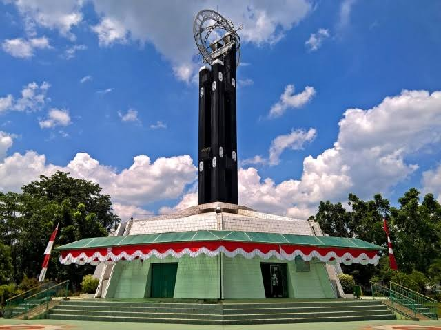

|
Wisata Budaya yang ada di Pontianak , dan merupakan titik dari kulminasi
|
|
|  |
Hanya ada 12 negara di dunia yang dilintasi garis khatulistiwa. Namun hanya ada 1 kota yang persis memisahkan belahan bumi utara dan selatan, yakni Pontianak. Anda tepat di titik tersebut saat mengunjungi Tugu Khatulistiwa. Tugu Khatulistiwa terletak di Jalan Khatulistiwa, Pontianak, Kalimantan Barat. Inilah garis lintang nol derajat bumi, garis yang tepat membelah bumi bagian selatan dan bagian utara. Tugu yang asli, berukuran lebih kecil, terdapat di dalam komplek bangunan Tugu Khatulistiwa berukuran besar. |
Demikian juga dengan bayangan benda-benda lainnya di sekitar Tugu Khatulistiwa. Ini menjadi tontonan sekaligus wisata mengasyikkan bagi warga Pontianak dan wisatawan lainnya. Tak sedikit dari pengunjung yang melihat bayangan mereka sendiri menghilang pada saat hari kulminasi ini. Tak hanya itu, wisatawan juga bisa 'melintasi' garis khatulistiwa kemudian mendapatkan sertifikat. Dalam sertifikat berjudul 'Piagam Perlintasan Khatulistiwa' itu, tercatat nama serta tanggal dan jam kita melintasi garis khatulistiwa. Tak ayal, Tugu Khatulistiwa menjadi destinasi wajib wisatawan di ibukota Kalimantan Barat tersebut. Jangan lupa mampir ya, masuk tugu ini tak dipungut biaya sepeser pun! |

|